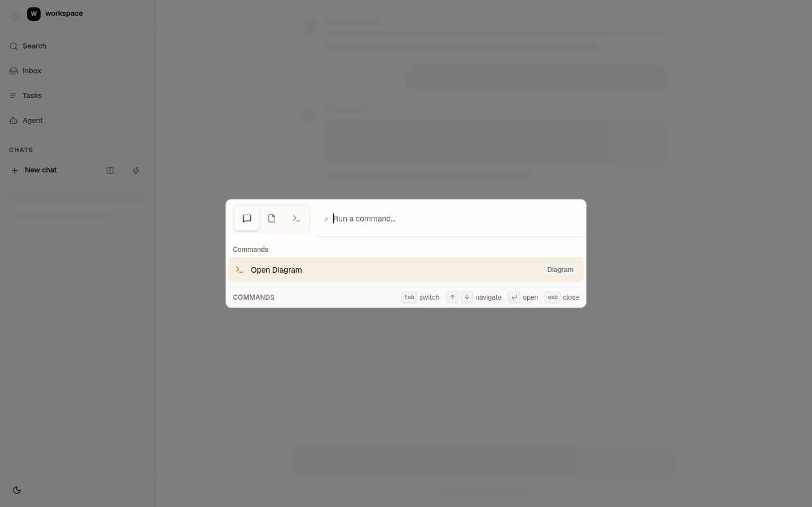
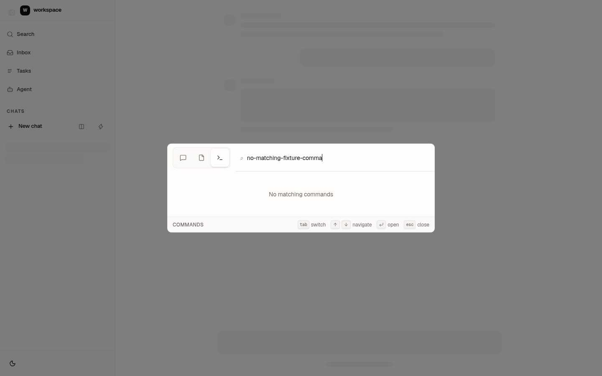
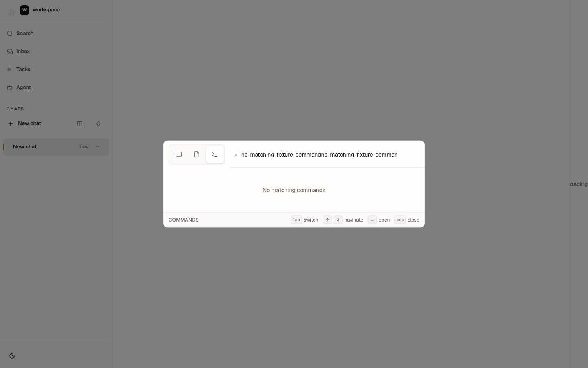
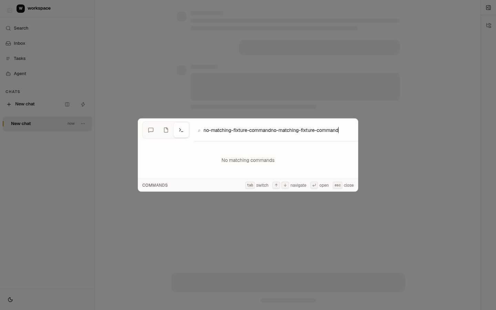
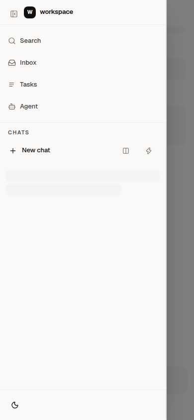
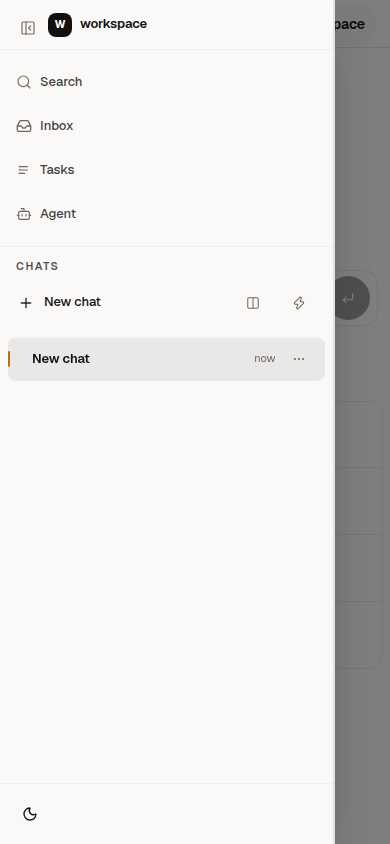
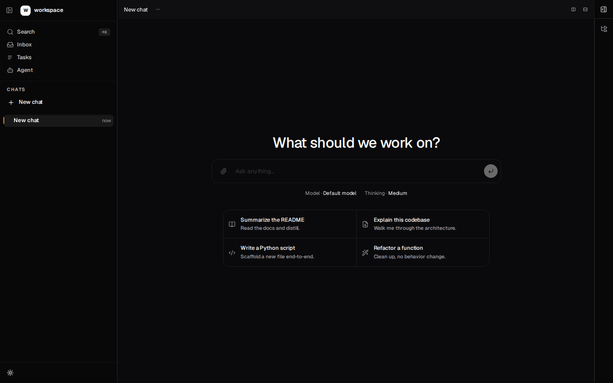
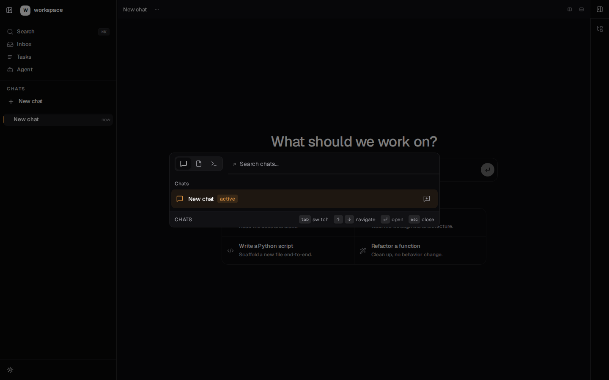
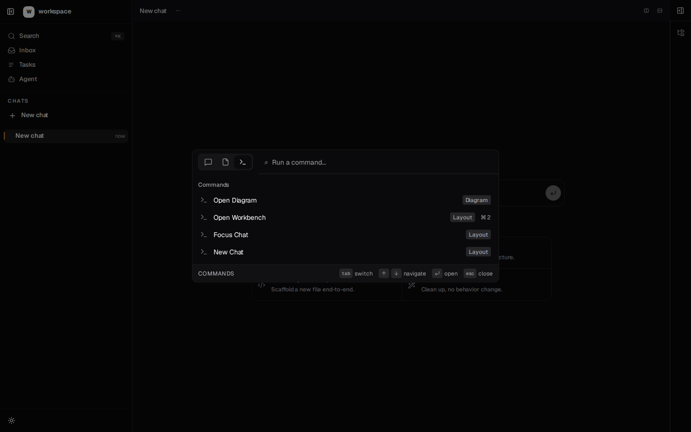
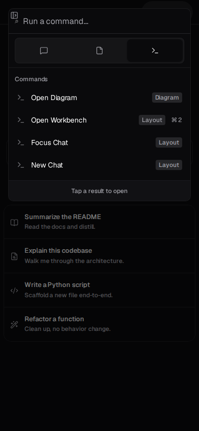

candidate · explore-0001-layoutdesktop · 1440×900Bombadil explorationreproduce/cpr-04%3Aworkspace-command-palette%3Acandidate%3Adesktop%3Aexplore-0001-layout%3Affcb818f5244action nullcpr-04:workspace-command-palette:candidate:desktop:explore-0001-layout:ffcb818f5244
candidate · explore-0004-dialog-popoverdesktop · 1440×900Bombadil explorationreproduce/cpr-04%3Aworkspace-command-palette%3Acandidate%3Adesktop%3Aexplore-0004-dialog-popover%3Aeefd7db68112action {"Click":{"fingerprint":{"accessible_name":"Search⌘K","tag":"button","input_type":"button","text_content":"Search⌘K"},"point":{"x":137.5,"y":82}}}cpr-04:workspace-command-palette:candidate:desktop:explore-0004-dialog-popover:eefd7db68112
candidate · explore-0002-layoutdesktop · 1440×900Bombadil explorationreproduce/cpr-04%3Aworkspace-command-palette%3Acandidate%3Adesktop%3Aexplore-0002-layout%3A40ad1d044db8action "Wait"cpr-04:workspace-command-palette:candidate:desktop:explore-0002-layout:40ad1d044db8

candidate · explore-0006-dialog-popoverdesktop · 1440×900Bombadil explorationreproduce/cpr-04%3Aworkspace-command-palette%3Acandidate%3Adesktop%3Aexplore-0006-dialog-popover%3Ac8670d1dcc4baction "Wait"cpr-04:workspace-command-palette:candidate:desktop:explore-0006-dialog-popover:c8670d1dcc4b

candidate · explore-0008-dialog-popoverdesktop · 1440×900Bombadil explorationreproduce/cpr-04%3Aworkspace-command-palette%3Acandidate%3Adesktop%3Aexplore-0008-dialog-popover%3A114ea2cad92aaction {"TypeText":{"text":"no-matching-fixture-command","delay_millis":0}}cpr-04:workspace-command-palette:candidate:desktop:explore-0008-dialog-popover:114ea2cad92a

candidate · explore-0010-dialog-popoverdesktop · 1440×900Bombadil explorationreproduce/cpr-04%3Aworkspace-command-palette%3Acandidate%3Adesktop%3Aexplore-0010-dialog-popover%3A4ae66bda7535action {"TypeText":{"text":"no-matching-fixture-command","delay_millis":0}}cpr-04:workspace-command-palette:candidate:desktop:explore-0010-dialog-popover:4ae66bda7535

candidate · explore-0011-dialog-popoverdesktop · 1440×900Bombadil explorationreproduce/cpr-04%3Aworkspace-command-palette%3Acandidate%3Adesktop%3Aexplore-0011-dialog-popover%3A77bec1202effaction {"Click":{"fingerprint":{"accessible_name":"Commands","tag":"button","input_type":"button","text_content":"Commands"},"point":{"x":526,"y":377.5}}}cpr-04:workspace-command-palette:candidate:desktop:explore-0011-dialog-popover:77bec1202eff

candidate · explore-0026-layoutdesktop · 1440×900Bombadil explorationreproduce/cpr-04%3Aworkspace-command-palette%3Acandidate%3Adesktop%3Aexplore-0026-layout%3Ac528a1f35afeaction "Wait"cpr-04:workspace-command-palette:candidate:desktop:explore-0026-layout:c528a1f35afe

candidate · explore-0014-dialog-popoverdesktop · 1440×900Bombadil explorationreproduce/cpr-04%3Aworkspace-command-palette%3Acandidate%3Adesktop%3Aexplore-0014-dialog-popover%3Ac528a1f35afeaction {"Click":{"fingerprint":{"accessible_name":"Search⌘K","tag":"button","input_type":"button","text_content":"Search⌘K"},"point":{"x":137.5,"y":82}}}cpr-04:workspace-command-palette:candidate:desktop:explore-0014-dialog-popover:c528a1f35afe

candidate · explore-0001-layoutmobile · 390×844Bombadil explorationreproduce/cpr-04%3Aworkspace-command-palette%3Acandidate%3Amobile%3Aexplore-0001-layout%3Aff067ed270b1action nullcpr-04:workspace-command-palette:candidate:mobile:explore-0001-layout:ff067ed270b1

candidate · explore-0004-dialog-popovermobile · 390×844Bombadil explorationreproduce/cpr-04%3Aworkspace-command-palette%3Acandidate%3Amobile%3Aexplore-0004-dialog-popover%3A31e49a82afe5action {"Click":{"fingerprint":{"accessible_name":"Search⌘K","tag":"button","input_type":"button","text_content":"Search⌘K"},"point":{"x":166.6953125,"y":82}}}cpr-04:workspace-command-palette:candidate:mobile:explore-0004-dialog-popover:31e49a82afe5
candidate · explore-0002-layoutmobile · 390×844Bombadil explorationreproduce/cpr-04%3Aworkspace-command-palette%3Acandidate%3Amobile%3Aexplore-0002-layout%3Ae52b5a2d8117action "Wait"cpr-04:workspace-command-palette:candidate:mobile:explore-0002-layout:e52b5a2d8117
candidate · explore-0003-layoutmobile · 390×844Bombadil explorationreproduce/cpr-04%3Aworkspace-command-palette%3Acandidate%3Amobile%3Aexplore-0003-layout%3A2fedd13eb785action {"Click":{"fingerprint":{"accessible_name":"Open app navigation","tag":"button","input_type":"button"},"point":{"x":28,"y":30}}}cpr-04:workspace-command-palette:candidate:mobile:explore-0003-layout:2fedd13eb785
candidate · explore-0005-dialog-popovermobile · 390×844Bombadil explorationreproduce/cpr-04%3Aworkspace-command-palette%3Acandidate%3Amobile%3Aexplore-0005-dialog-popover%3Aa7496a86a729action {"TypeText":{"text":"no-matching-fixture-command","delay_millis":0}}cpr-04:workspace-command-palette:candidate:mobile:explore-0005-dialog-popover:a7496a86a729

candidate · explore-0009-layoutmobile · 390×844Bombadil explorationreproduce/cpr-04%3Aworkspace-command-palette%3Acandidate%3Amobile%3Aexplore-0009-layout%3Afb27bd065182action "Wait"cpr-04:workspace-command-palette:candidate:mobile:explore-0009-layout:fb27bd065182

candidate · closeddesktop · 1440×900Known Playwright checkpointcpr-04:workspace-command-palette:candidate:desktop:closed:cde4e23bae94

candidate · opendesktop · 1440×900Known Playwright checkpointcpr-04:workspace-command-palette:candidate:desktop:open:88ba94e53056

candidate · commandsdesktop · 1440×900Known Playwright checkpointcpr-04:workspace-command-palette:candidate:desktop:commands:928293f41bc9

candidate · closedmobile · 390×844Known Playwright checkpointcpr-04:workspace-command-palette:candidate:mobile:closed:81743123500c

candidate · openmobile · 390×844Known Playwright checkpointcpr-04:workspace-command-palette:candidate:mobile:open:e2ee7624e352

candidate · commandsmobile · 390×844Known Playwright checkpointcpr-04:workspace-command-palette:candidate:mobile:commands:414cc474961c